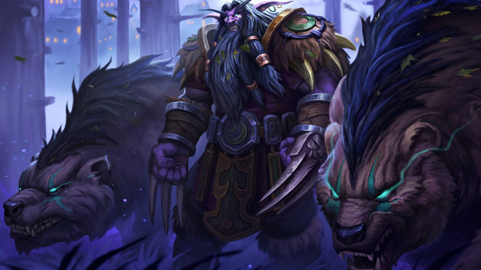
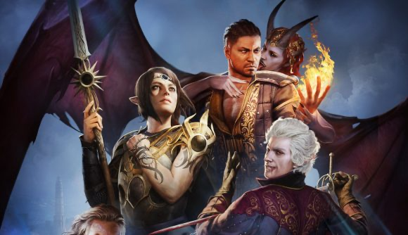

Why Druid Tanking is best class for tanking in World of Warcraft: Classic?

Author: Jordan Hybki
Published Date:
The Feral Druid in World of Warcraft: Classic is the best class to tank during dungeons and raids. Their skill rotation is much simpler compared with Protection Warrior or Retribution Paladin as within bear form:
You pull creature with Farie Fire skill. This skill will decrease the armour of the enemy and help building rage meter in bear form.
Cast Challenging Roar to get all nearby enemies to attack you for six seconds.
Cast Maul or Swipe when not on cooldown. Swipe allows bear to avoid capping rage.
Cast Growl at creatures if they change targets to another player.
In terms of advantages for Feral Druid tanking in World of Warcraft: Classic has the most health points allowing higher damage to sustain and less consumables required to stay in the fight. If the raid or dungeon all dies and loose world buffs, it allows an easier time for the party as they don’t need as much healer coordination to continue through. Feral Druid has the ability to acquire an aura that boost crit change by three percent, overall adding 110 damage per second on any encounter. With an increased health pool Feral Druids can be resistant to magic damage from enemies, since mage damage is delt before armour calculations. The disadvantage to tanking as Feral Druid is it can’t block or parry like the Protection Warrior, can’t push drink rage potions for extra initial rage points and low amounts of defence allows them to be critically damaged often.
Can't wait for Baldur's Gate 3 to be released to early access!

Author: Jordan Hybki
Published Date:
If you want the graphic fidelity of the Divinity Games on top of the role-playing aspects of Dungeons of Dragons the video game Baldur's Gate 3 is for you! Just came onto to early access on Steam during the . Developed by Larian Studios, this will be the third instalment of the Baldur’s gate video game franchise, with the previous two being developed by BioWare and Black Isle Studios. The current early access version includes:
First act out of four acts of the campaign. Campaign currently contains of content and can be played via online multiplayer co-op.
Character creator includes customisation of sixteen races and six classes directly from Dungeons and Dragons.
Lover Character creator where you can customise your love interest within the campaign.
It is estimated that it could take a year or more for Baldur's Gate 3 to get out of early access. The story itself will captivate you as the developers iteratively update the game until its fully flushed out. The story starts off with a Mind flayer driving a floating ship that contains squid like ligaments Nautiloid. The Nautiloid is directed over a city, whereby city towers and defences are destroyed and you as the player, along with many other citizenries are abducted and teleported onto the ship. A portal suddenly opens, and three dragons pursue the Mind flayer and the Nautiloid out of the city. One of the Mind flayers onboard implants the player with a worm like creature that gives psychic cthulhu-esque powers and suddenly the hull is breached on the Nautiloid. The game starts from escaping the ship. The only downfall with this game is the current steep price tag of $89.95 AUD, but at this rate with the future additions it will all but worth it.